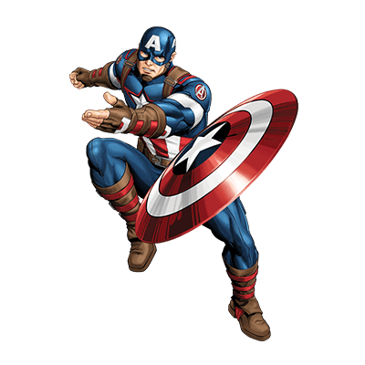

Superhero trivia
What makes a superhero?
A superhero is a person who does heroic deeds and has the ability to do them in a way that a normal person couldn’t. So in order to be a superhero, you need a power that is more exceptional than any power a normal human being could possess, and you need to use that power to accomplish good deeds. Otherwise, a policeman or a fireman could be considered a superhero.
For instance, a good guy fighting a bad guy could be just a regular police story or detective story or human-interest story. But if it’s a good guy with a superpower who is fighting a bad guy, it becomes a superhero story. If the good guy is doing something that a normal human being couldn’t do, couldn’t accomplish, then I assume he becomes a superhero.
Article on superheroes at OUP blog
Top superheroes
- Captain America
-
Spider-man
- Merry Jane
- Aunt May
- J. Jonah Jameson
- Deadpool
- Ironman
My favorite superhero
Captain America
Captain America is a superhero appearing in American comic books published by Marvel Comics. Created by cartoonists Joe Simon and Jack Kirby, the character first appeared in Captain America Comics #1 (cover dated March 1941) from Timely Comics, a predecessor of Marvel Comics. Captain America was designed as a patriotic supersoldier who often fought the Axis powers of World War II and was Timely Comics' most popular character during the wartime period. The popularity of superheroes waned following the war, and the Captain America comic book was discontinued in 1950, with a short-lived revival in 1953. Since Marvel Comics revived the character in 1964, Captain America has remained in publication.
Anchor to "What makes a superhero?"